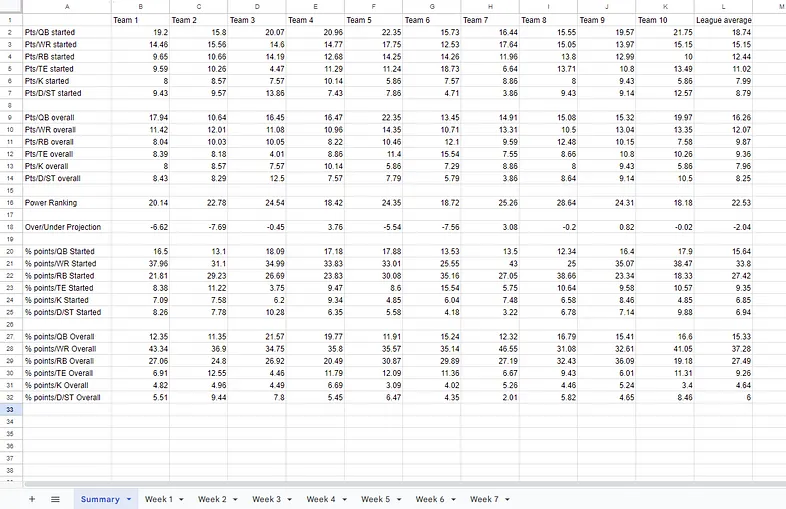

2024 | Python, AWS
Fantasy Football Stat Tracking Using Python and AWS
Crafted with Python and AWS, this autonomous system compiles detailed statistics for ESPN fantasy football leagues and surfaces richer insights than the default league experience.


This project grew out of wanting more useful data than ESPN gives by default. By pulling league information and running additional calculations, the tool made it easier to follow trends, standings, and playoff scenarios.
It also gave me a deeper project around APIs, automation, and packaging something that real users could keep using during a season.